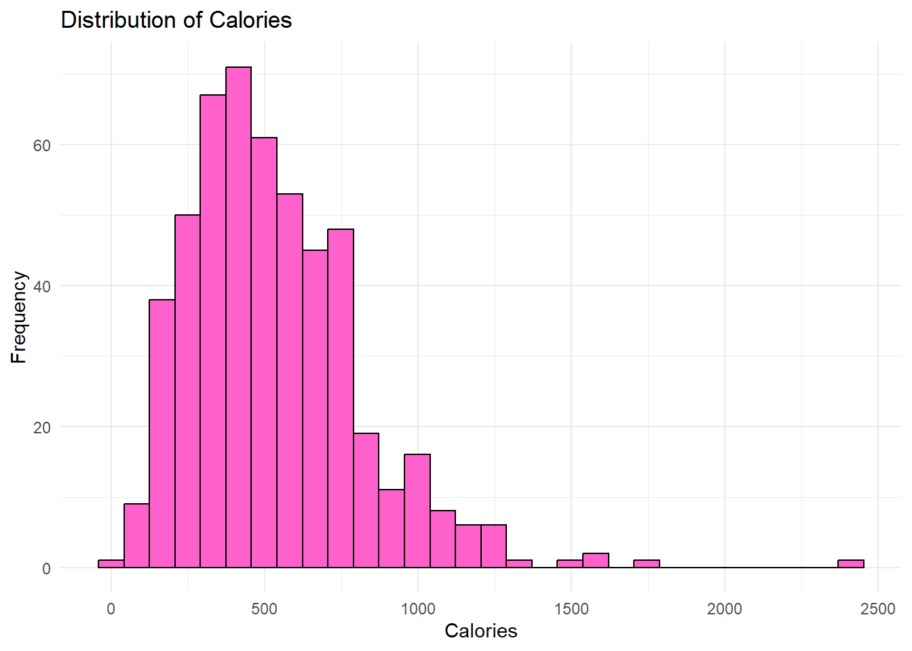
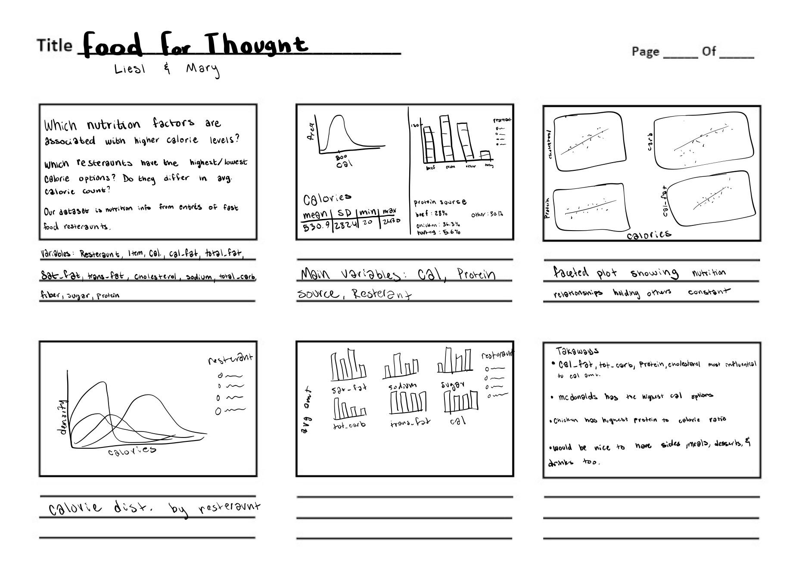
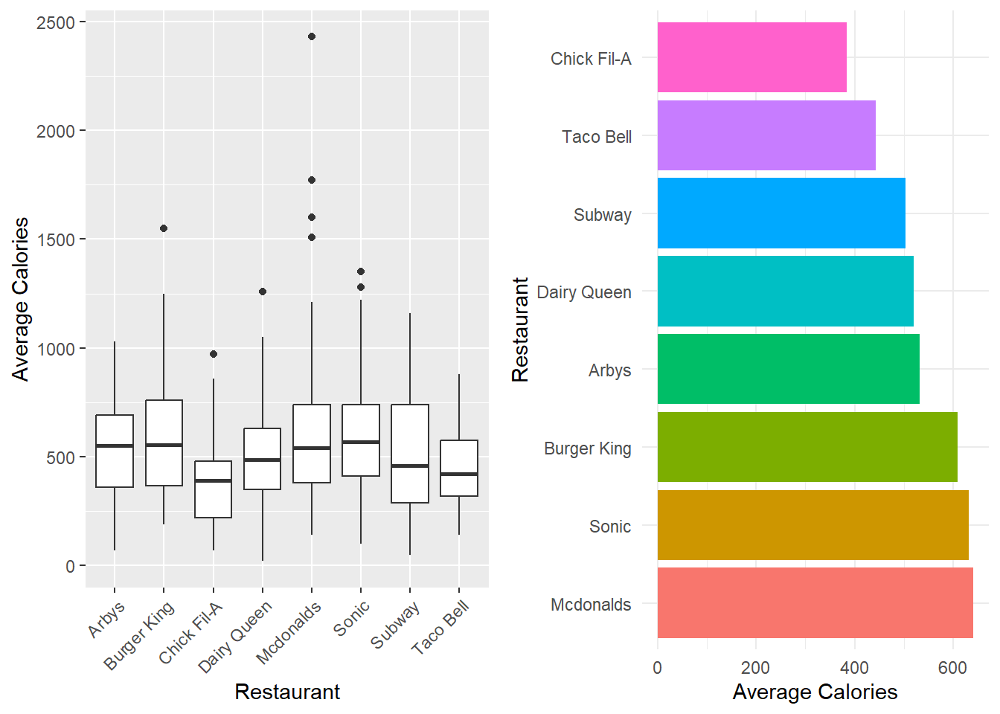
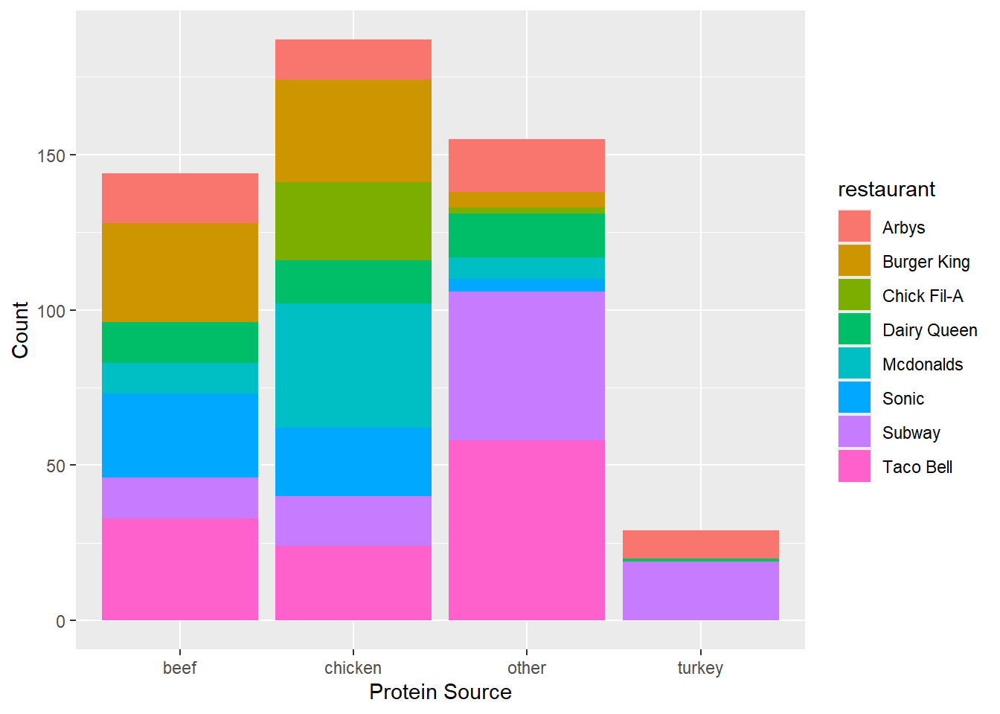
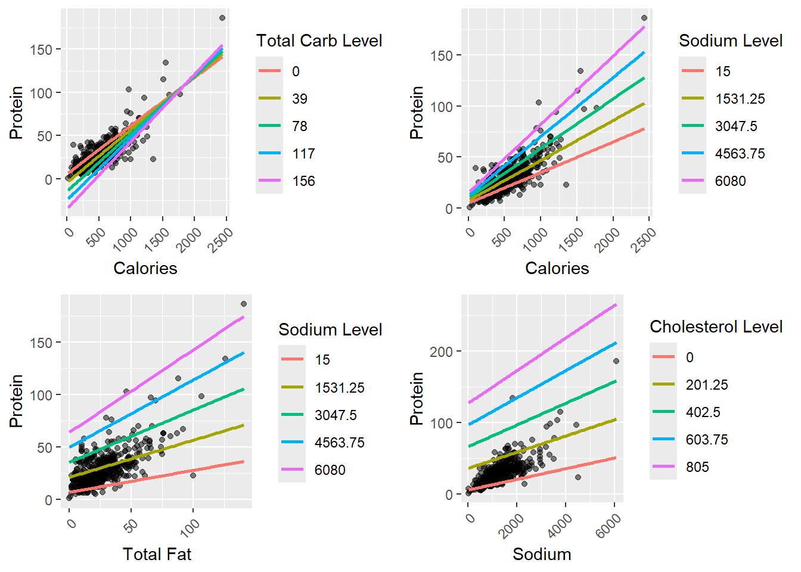
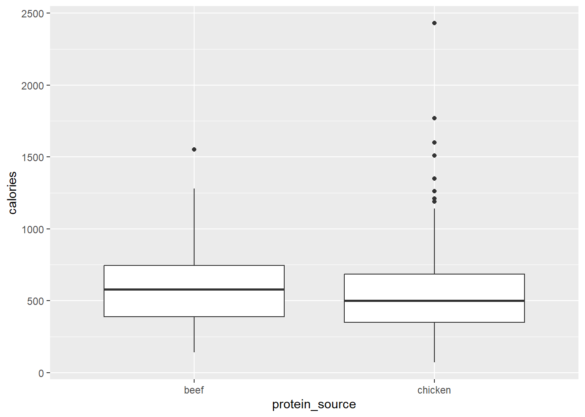
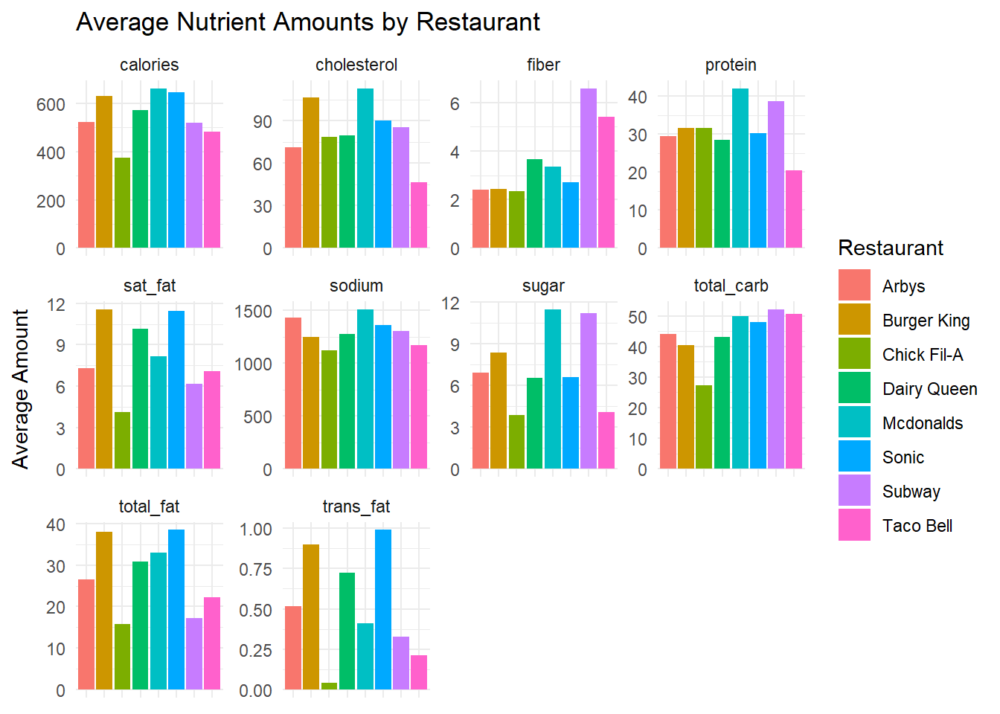
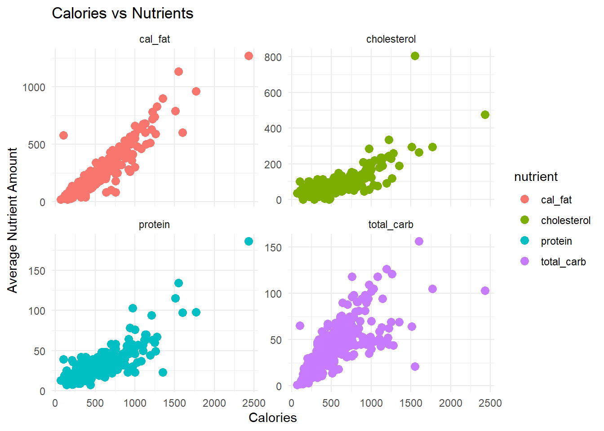
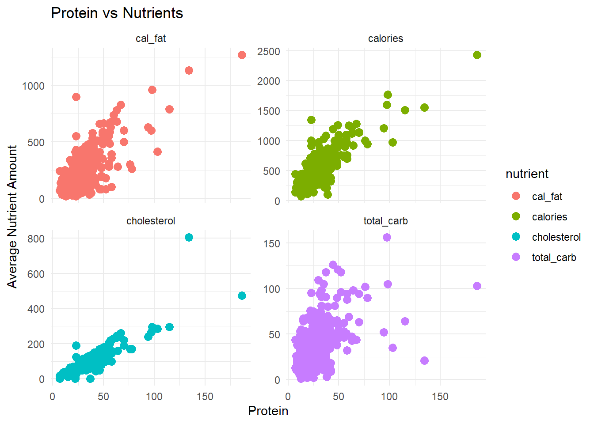
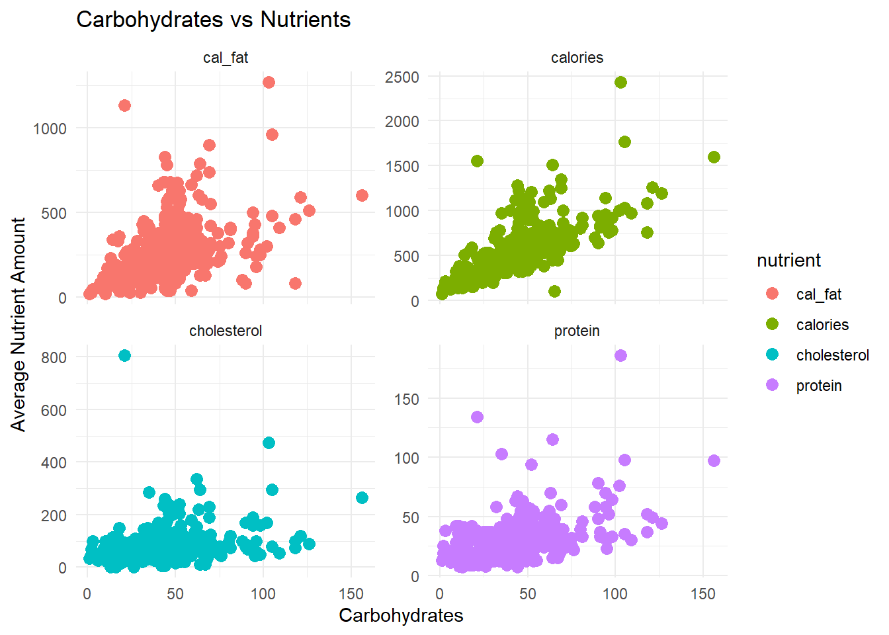

McStats: Serving Up the Data on Fast Food Nutrition
Storyboard

Introductory Graphs
Intro
The amount of calories in the food that we eat is important. Eating over your maintenance amount of calories can alter the activity of the HPA-axis, which produces hormones, causing our bodies to have higher circulating levels of the stress hormone cortisol (George et al., 2009). Chronic overproduction of cortisol can have many adverse health effects on humans including obesity. Obesity is a rising public health issue, especially in the United States, as the occurrence rates increase (Overweight & Obesity Statistics - Niddk, n.d.). Researching obesity is important because it has high rates of comorbidity with many other very serious health issues including type 2 diabetes, hypertension, sleep apnea, arthritis, and certain types of cancer (Pi-Sunyer, 1999). A factor that can contribute to rising rates of obesity is easy access to affordable, fast, and calorie dense foods.
Awareness of the caloric content of our food is one important way that we can make informed decisions about the meals that we eat. Fast food chains now, by law, must display the calorie count on each of their items and have nutritional information on hand if requested, but this might not be enough. Block et al., showed that people still underestimate the amount of calories in the fast food meals that they eat, especially when dining at Subway compared to McDonald’s (2013).
Though eating the right amount of calories is important, it is also not the whole picture. Understanding the nutritional content of the food we eat, such as, levels of protein, carbohydrate, sugar, fat, etc. is invaluable to consider, to make sure that our bodies have all the nutrients they need to function. Knowing these values may also help us make predictions about the amount of calories in our food.
In our research we explored different nutritional factors and their relationship with the number of calories, amount of protein, and amount of carbohydrates in fast food meals. We also explored how different fast food chains compare in the amount of calories that are in their products. We hypothesize that there are significant differences between average calorie amounts at different restaurants and that there is a significant linear relationship between our response and explanatory variables.
EDA
Firstly, we checked the residuals and conditions of our data to determine if it would be appropriate for modeling because we wanted to run linear regressions. All of our response variables were generally unimodel and roughly normally distributed. The relationship between our response and explanatory variables was linear, as seen in figs. 7-9 in the appendix. We also found equal variance and normalcy in the residuals, aside from some expected high outliers. Because each observation is a menu item, we do not ancipate any issues with independence.


burger in the name, were not classified properly and were instead sorted into the other column. We will be focusing on the beef and chicken columns for further analysis.Materials and Methods
The data that we used for this project came from OpenIntro. The dataset came with more variables than we used in the analysis. We decided to remove the vitamin a, vitamin c, calcium, and salad variables, as many of them had several N/A values and we felt that the other variables would be more important to answering our research questions.
Our first task was to use models to check the relationships between different variables. We built multiple linear regression (MLR) models for predicting calories, amount of protein, and carbohydrates, which were the three variables we decided to use as response variables. Lasso regression was used to select the optimal variables for each of the models. With the lasso models, we ran cross-validation to optimize the penalty. We then ran the model with the optimized penalty to see which variables were most important to predicting the response. Variance inflation factor (VIF) values were also examined to look for and try to reduce any effects of multicollinearity in the models, so we could better understand and interpret the coefficients.
We next wanted to look deeper into restaurants, and particularly decided to focus on calorie amounts. An ANOVA test was used to examine the significance of differences between calorie amounts across the various restaurants in the dataset. Further, a Tukey HSD test was used to dig deeper into the ANOVA’s results and determine which restaurants had significantly different mean calorie amounts compared to others.
Next, logistic regression models were used to find significant predictors of a menu item’s origin (McDonald’s vs. Not McDonald’s) and protein source (Beef vs. Chicken).
Finally, we wanted to further examine our variables and look into any interactions that could be influencing our models and results, so we tested each of our original multiple linear regressions for interaction terms.
Results
General Data Information
The distribution of menu item calories follows a relatively normal distribution with a little bit of a right skew. The average amount of calories per menu item appears to vary depending on the restaurant, with McDonald’s having the highest and Chick Fil-A having the lowest average. The relationships between calories and each of the nutrients also follow a linear pattern relatively well. We also looked into different protein sources and found that beef and chicken had the most menu items associated with them so we dive deeper into that relationship in the following analysis as well.
Variable Selection
The Lasso regressions resulted in our three MLR models with calories, protein, and carbohydrates as the response variables. In the regression model for calories we find that total carbs, total fat, and protein are all very significant predictors (p < 2e-16), with trans fat (p = 0.197), cholesterol (p = 0.370), and sodium (p = 0.118) playing a supportive role in prediction. All of the variables except cholesterol were positively correlated with calories with no significant interactions.
The adjusted R^2 value for this model is 0.9744, which means that 97.44% of the variability in calories can be accounted for by the variables in the model (p < 2.2e-16).
The regression model for total carbs includes significant predictors, calories from fat, fiber, calories (p < 2e-16), protein (p = 3.00e-07), sodium (0.000304), sugar (4.13e-13), and cholesterol (2.51e-07). All of the variables in the model were positively correlated with total carbs except protein, calories from fat, and cholesterol. The adjusted R^2 value for this model is 0.8956 which means that 89.56% of variability in total carbohydrates can be explained by the variables in the model (p < 2.2e-16). The original lasso model included all variables, but multicollinearity issues led us to remove total_fat, trans_fat, and sat_fat.
| Res.Df | RSS | Df | Sum of Sq | F | Pr(>F) |
|---|---|---|---|---|---|
| 492 | 32457.07 | NA | NA | NA | NA |
| 495 | 32521.01 | -3 | -63.93995 | 0.3230776 | 0.808689 |
In the regression model for predicting protein we find that calories from fat, sodium, cholesterol, and calories are significant predictors of protein (p < 2e-16), as well as total carb (p = 1.74e-08) and saturated fat (p = 8.44e-07), with fiber playing a supporting role (p = 0.452). We ran into additional multicollinearity issues between variables, so decided to look deeper into potential reduction.
| Res.Df | RSS | Df | Sum of Sq | F | Pr(>F) |
|---|---|---|---|---|---|
| 495 | 12414.37 | NA | NA | NA | NA |
| 496 | 16185.05 | -1 | -3770.685 | 150.3491 | 0 |
Here we see a p value of nearly 0, well below our threshold. Because we are trying to find the best model and are not as worried about interpretations of individual variables at this time, we chose to use the larger model, which can more accurately predict protein levels. The adjusted R^2 value for this model is 0.9201. This means that 92.01% of the variability in protein can be explained by the variables in the model (p < 2.2e-16).
Interactions
We also wanted to look into potential interactions in our model, as we know that often times nutritional values have relationships that might not be obvious.

There are interactions between calories and total carbs, calories and sodium, total fat and sodium, and sodium and cholesterol. As we can see, higher levels of all of these interaction terms lead to higher slopes of the regression, meaning that they positively affect the relationship.
Calorie Levels across Restaurants
The results of our analysis of variance (ANOVA) for differences in average calories across all restaurants was significant (F-value = 6.085, p = 7.75e-07).
| Restaurants | Estimate | Lower Confidence Level | Upper Confidence Level | Adjusted P Value |
|---|---|---|---|---|
| Chick Fil-A-Burger King | -224.1270 | -412.46039 | -35.79357 | 0.0077024 |
| Taco Bell-Burger King | -164.9193 | -290.94531 | -38.89320 | 0.0019839 |
| Mcdonalds-Chick Fil-A | 255.9064 | 61.68697 | 450.12589 | 0.0017798 |
| Sonic-Chick Fil-A | 247.2537 | 50.69256 | 443.81477 | 0.0036044 |
| Taco Bell-Mcdonalds | -196.6987 | -331.36232 | -62.03508 | 0.0002868 |
| Taco Bell-Sonic | -188.0459 | -326.06536 | -50.02652 | 0.0010247 |
We found that there are significant differences between Chick Fil-A and Burger King (p = 0.00770), Taco Bell and Burger King (p = 0.00198), McDonald’s and Chick Fil-A (p = 0.00178), Sonic and Chick Fil-A (p = 0.00360), Taco Bell and McDonalds (p = 0.000287), and Taco Bell and Sonic (p = 0.00102). We can be 95% confident that the average calorie difference between Chick Fil-A and Burger King is between -412.46 and -35.79, the difference between Taco Bell and Burger King is between -290.94 and -38.89, the difference between McDonald’s and Chick Fil-A is between 61.69 and 450.13, the difference between Sonic and Chick Fil-A is between 50.69 and 433.81, the difference between Taco Bell and McDonalds is between -331.36 and -62.04, and finally, the difference between Taco Bell and Sonic is between -326.07 and -50.03. We can see that in general, Chick Fil-a and Taco Bell have lower average calorie counts than many of the other restaurants, showing a significant contrast, and McDonalds has a significantly higher calorie count than a few restaurants.
Logistic Regression
Our last statistical test was logistic regression with binary variables. The first logistic model we created was to calculate the odds of an item being from McDonald’s or not McDonald’s. Our significant predictors were protein (p = 0.000222), fiber (p = 0.000669), and sugar (p = 0.002798). Our findings are presented below:
For every 1g increase in protein, the odds that the item is from McDonald’s rises by 13% when all other variables are held constant.
For every 1g increase in fiber, the odds the item is from McDonald’s as opposed to other fast food restaurants decreases by about 26.5% when all other variables are held constant.
For every 1g increase in sugar, the odds the item is from McDonald’s increase by about 8.6% when all other variables are held constant.
Our other logistic model was calculating the odds that an item’s protein source was beef vs. chicken. The significant predictors were protein (p = 6.63e-05) and cholesterol (p = 0.000479). We once again present odds ratios for each significant predictor:
For every 1g increase in protein, the odds the item is beef rather than chicken decrease by about 12.6% when holding all other variables constant.
For every 1g increase in cholesterol, the odds that item is beef rather than chicken increase by about 4% holding all other variables constant.
Discussion
Calories are an important statistic to look at when we make decisions about the food we eat, but it is also important to look at the rest of the label to know that our bodies are getting the nutrients that they need to function. Our goals were to find ways to predict calories, protein, and total carbohydrates in fast food meals. The linear regression models that we developed work effectively to do this. These models can help us understand the relationships between different nutrition variables which in turn helps us understand and make better decisions about the meals we eat. Our ANOVA tests can also help people make decisions about which fast food restaurants to eat at based on the average amount of calories in the meals. Our logistic regression models can also be helpful in decision making of menu items and their main protein source.
These findings can aid consumers in making healthier and more informed decisions about fast food consumption as we see in the literature that it is not common for people to know what and how much they are eating at fast food restaurants. These results can be generalized to the restaurants in the study, but not outside that scope. Since the restaurants in this study are nationwide chains consumers across the United States can use this information to decide where to eat out.
One important limitation of this study is the lack of data for fiber. Since the dataset is already small and some of the values were missing we had to replace the missing values with the mean for the column since it was an important factor. There were also a lot of values missing for the vitamin columns so we had to remove them from the dataset even though they could be valuable predictors.
Some important steps for future researchers in the field to take are collecting more data. This means less NA values, more restaurants and also more menu items. Something that was disappointing about the dataset we used was that there were no sides, drinks, or deserts represented, especially since it is uncommon to go to fast food restaurants and order only an entrée. There was also no serving sizes, and we noticed that some of our items were way larger portions than others, and very unlikely to be eaten in one sitting. Having nutrition information for servings could be really helpful and a great addition to the dataset. The addition and use of these new data points and variables would be really beneficial for creating even more robust models.
Appendix
| Variable | Type | Response/Explanatory |
|---|---|---|
| restaurant | character | Explanatory |
| item | character | Explanatory |
| calories | numeric | Response |
| cal_fat | numeric | Explanatory |
| total_fat | numeric | Explanatory |
| sat_fat | numeric | Explanatory |
| trans_fat | numeric | Explanatory |
| cholesterol | numeric | Explanatory |
| sodium | numeric | Explanatory |
| total_carb | numeric | Response |
| fiber | numeric | Explanatory |
| sugar | numeric | Explanatory |
| protein | numeric | Response |
| protein_source | character | Explanatory |
| mcdonalds | factor | Explanatory |
| beef | numeric | Explanatory |




